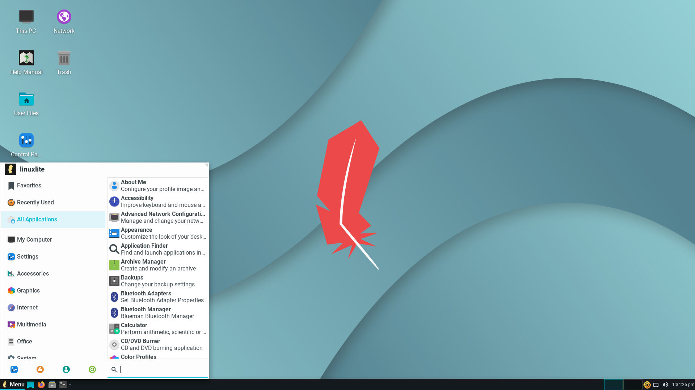

Retexp : projet Système : Installation d'un poste
Cahier des charges :
- Réaliser l'installation de 2 postes selon des critères précis sur une machine virtuelle.
- Paramétrer les différents droits des 2 types de poste à installer (poste pour développeur et poste pour administrateur).
- Ecrire un tutoriel sur ce qu'il faut réaliser afin de réaliser l'installation des 2 machines.
- Presenter un rapport des divers choix techniques réalisés par l'équipe.

Outils utilisés :
- Machine virtuelle pour installer le poste.
- Powerpoint pour faire la présentation du rapport.
- Visual studio code pour s'assurer que le développeur puisse coder dans un environnement approprié et sans problèmes d'accès.
Compétences aquises :
- Pratique des commandes de linux (terminal bash).
- Gestions des droits d'accès entre différents types d'utilisateur (administrateur et développeur).
- Paramétrage générale d'une machine dès son installation (choix initiaux comme la langue de l'interface et celle du clavier, le fuseau horaire,...).